# A tibble: 600 × 4
Fish Age Sex Experience
<dbl> <dbl> <dbl> <dbl>
1 3 19.9 1 2
2 4 20.5 1 6
3 1 24.1 0 2
4 6 21.1 1 5
5 5 21.3 0 4
6 1 24.4 1 1
7 3 21.9 0 8
8 3 18.5 0 4
9 5 19.6 1 6
10 3 20.1 1 4
# ℹ 590 more rows5 Unbounded Count Regression
When your outcome variable is a unbounded count variable, it has a lower bound of 0 and no upper bound. The fact that there is no upper bound has to do with the nature of the variable. Simply, when it’s possible that a variable has an unlimited count amount of any of its levels, and the levels of that variable are independent, then a Poisson or Negative Binomial regression is usually the way to go.
An unbounded count variable is easiest to understand and identify with an example. Imagine you are counting how many coins you pick up on the ground in a day on your daily walk. It is possible that at any given day you collect a lot of coins (with theoretically no maximum), and some days you collect zero coins. And it is assumed that the amount of coins you collect on one day does not impact the number of coins you find on any other day. Then the count for the number of coins is best represented by a Poisson or Negative Binomial distribution and we can use either Poisson or Negative Binomial regression. And at the of the analysis, we can ask “What is the average number of coins you would expect to pick up in a day?”
5.1 Count Events with a Poisson Distribution
The Poisson distribution is for models when the outcome variable is a count variable; specifically, when the variable is discrete. Unlike other distributions (e.g. Guassian, Binary), the Poisson distribution is described by only one parameter: \(\lambda\). The \(\lambda\) parameter is the mean number of occurrences/events in a specific time interval. Put another way, it’s the average expected count of a level of that variable.
The important thing to know is that Poisson regression’s goal is to model the \(\lambda\) parameter of a Poisson count distribution with a linear and additive combination of an intercept and slope of a predictor variable(s). But there’s an inherent problem with modeling a count distribution with a (non-Poisson) linear model because the outcome variable is bounded from [0,\(\infty\)], and we already know that a linear model works best when the outcome is unbounded (and continuous).
5.2 Defining the Poisson Regression Model and the Log Link Function
As mentioned in the previous section, the Poisson regression model takes into account that the outcome we are modeling is a one sided bounded count outcome. Since a count variable is bounded between [0,\(\infty\)], we need a way to modify the linear model to work with this variable. We are motivated to do this because the linear model works best when the outcome it is modeling is a unbounded (and continuous).
Let’s summarize the details of this model in a more compact way:
\[ y_i \sim Poisson(\lambda)\] Here we are saying that our outcome variable \(y_i\) is Poisson distributed. This is not the part of the model that regression is specifically concerned with – this is an assumption we are placing on the model knowing that the data is a bounded count variable between [0,\(\infty\)].
\[ g(\lambda) = \beta_0 + \beta_1 x_1\] Here we are now defining how we use the simple Poisson regression model. We call it simple because there is only one predictor variable (\(x_1\)). The right side of the equation should be very familiar to us: it is a linear model where we have \(\beta_0\) (the intercept), and \(\beta_1\) (the slope of the predictor variable).
But the left side of this equation is unique to generalized linear models. First, we see that we are assigning \(\beta_0\) and \(\beta_1\) to estimate \(\lambda\), which is the “rate” parameter of the Poisson distribution. However, we also see that \(\lambda\) is inside a function called \(g\), which we now define as our link function.
The link function will allow us to use the linear model (the right side of the equation that is usually assumed with a continuous and unbounded outcome) to estimate the rate, or average number of events, \(\lambda\), which is discrete and bounded.
In Poisson regression, our \(g\) is the “logarithmic function”, which is defined as:
\[ g = log(\lambda) \] or, equivalently,
\[ \lambda = e^g \] Therefore, the full equation becomes,
\[ log(\lambda) = \beta_0 + \beta_1 x_1\]
When we use the log link function with linear predictors, we now can call this “Poisson regression”.
5.2.1 Multiplicative Proporty
A unique property to the Poisson (and Negative Binomial?) regression model is the “product property” of logarithmic functions. Specifically,
\[log_amn = log_am + log_an \] So when we interpret the estimates of this model, they are multiplicative effects. We will see in the Data Demonstration sections how this affects our interpretation of our parameters.
TipTakeaway: Link Functions
When we use GLMs, we will be using many different link functions depending on the data. In the case of Poisson regression, all this function is trying to do is relate our linear predictors to a response outcome that is discrete and between some bounds (like 0 and \(\infty\)). More generally, we need link functions because if we did not do this, we are using the linear predictors to predictor some value that is continuous when it may not be continuous (like discrete values for count variables). We also find that when using the appropriate link function, other problems, like the shape of residuals, gets fixed!
5.3 Overdispersion and Count Events with a Negative Binomial Distribution
While a Poisson regression is used for unbounded count variables, a Negative Binomial regression is also used for the same reason. When to use between a Poisson and Negative Binomial is due to overdispersion. Overdispersion occurs when the variance of the count variable is greater than the mean. Overdispersion happens a lot in the real world, so we will always first fit a Poisson distribution, check for overdispersion, and default to Negative Binomial regression if it occurs.
It is worth emphasizing that the interpretation are the same for parameter estimates of both Poisson and Negative Binomial regression, which makes the use of Poisson and Negative Binomial regressions key models for unbounded count variable that are also not ordinal.
This chapter will contain two Data Demonstrations in order to outline the thought process of choosing between a Poisson and Negative Binomial regression.
5.4 Data Demonstration #1: Poisson Regression
We will use the simulated toy-dataset “fish_example.csv” to analyze and predict the relationship of the number of fishes caught and predictor variables like age, sex, and years of experience.
- Data: fish_example.csv
5.4.1 Loading the Packages and Reading in Data
This data shows records for 600 individual fisherpeople where each row is one fisher.
Here’s a table of our variables in this dataset:
| Variable | Description | Values | Measurement |
|---|---|---|---|
Fish |
Number of affairs | Integer | Nominal |
Age |
Age | Double | Scale |
Sex |
Female =0, Male = 1 | Integer | Nominal |
Experience |
Number of Years of Fisher Experience | Double | Scale |
5.4.2 Prepare Data / Exploratory Data Analysis
For Poisson Regression, let’s first treat the discrete variables in this dataset as factors and apply labels to make it easier to interpret.
Next, let’s plot the distribution of the count of Fish. The main thing to consider is that this is a discrete variable and using Poisson regression inherently takes this into account.
Finally, let’s consider a plot of the relationship between the count of fishes and years of experience being a fisher.
ggplot(data = fishing, mapping = aes(x = Fish, y = Experience)) +
geom_point() 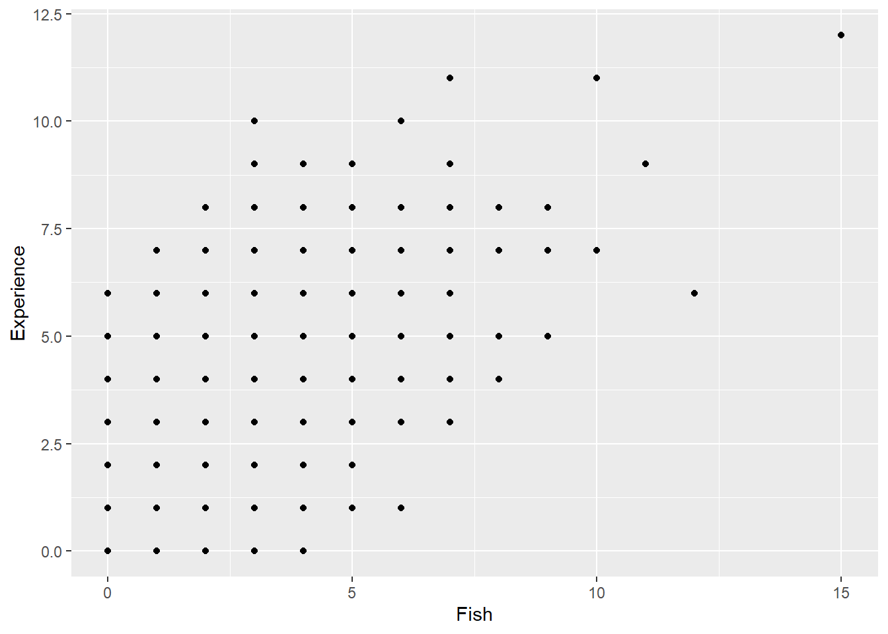
As we can see, there seems to be a positive relationship between the count of fish and years of experience being a fisher.
5.4.3 Models Without Interaction Terms
5.4.3.1 Less Correct: the General Linear Model
Before we fit the Poisson regression model, it would be worthwhile to try fitting the less appropriate regular general linear model. We’ll use our old friend lm() to assess the relationship between the outcome variable Fish with the predictor variables Sex and Experience as a multiple regression example. Again, we know it is less appropriate because we are treating the outcome variable as a continuous variable rather than a count variable. For more information on general linear modeling, we covered these topics in our Regression Recap chapter.
| Parameter | Coefficient | SE | 95% CI | t(597) | p |
|---|---|---|---|---|---|
| (Intercept) | 1.27 | 0.17 | (0.93, 1.61) | 7.33 | < .001 |
| Sex (Male) | 0.17 | 0.15 | (-0.12, 0.46) | 1.18 | 0.239 |
| Experience | 0.45 | 0.04 | (0.38, 0.52) | 12.65 | < .001 |
As the results show, we have a significant partial effect of Experience, such that a 1 unit increase in Experience increases the amount of fishes by a small amount (0.24 units of the number of “fish”) while controlling for Sex. It is worth nothing that the regular lm() “worked” in that it was able to produce an estimate.
5.4.3.1.1 Checking Assumptions
When we fit a model, we always want to see if there were any violations in the assumptions. We will use the diagnostic function check_model() to see if there are any deviations from lm() assumptions. For this model, the most concerning assumption appears to be the normality of residuals, as the distribution is offset from the normal curve. Updating our model to a generalized linear model that takes into account our discrete outcome variable should help fix this problem.
check_model(fitlm1, check = "normality")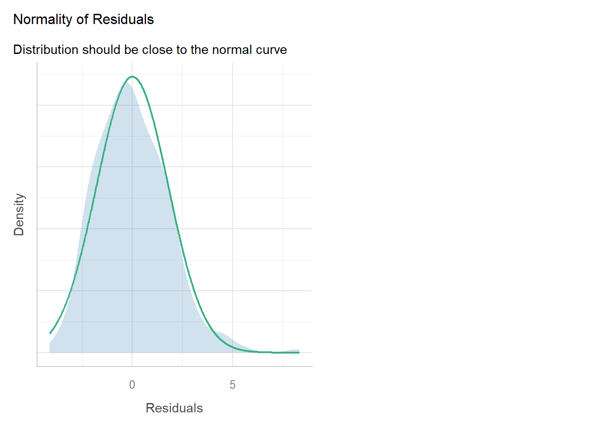
check_model(fitlm1)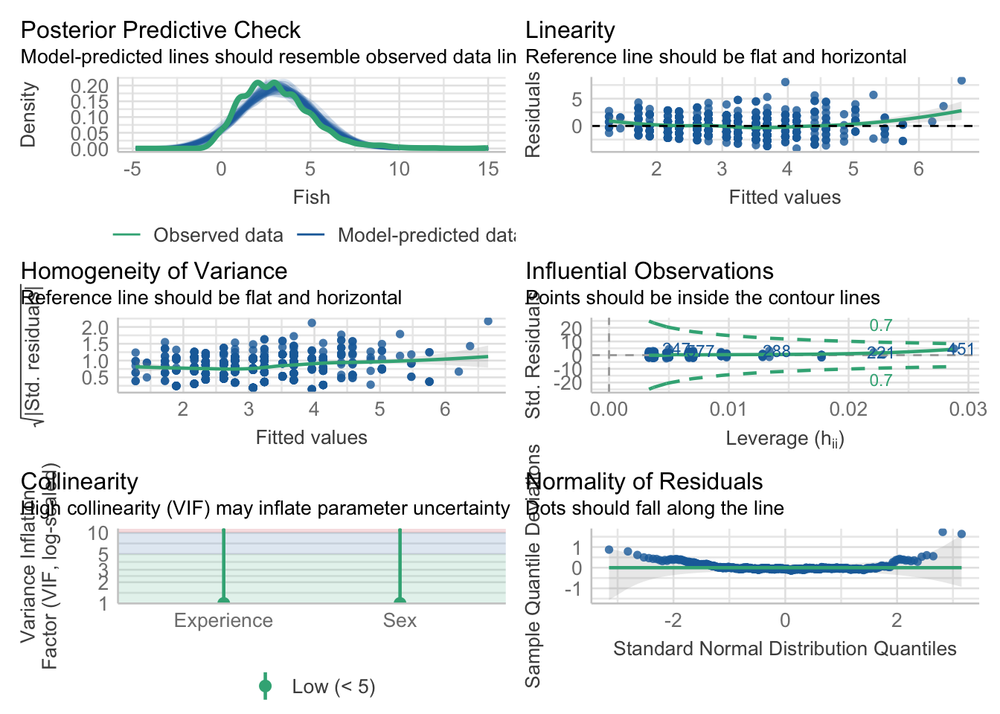
5.4.3.2 More Correct: Poisson Regression
Now let’s compare a Poisson regression model of the same variables. Our first step is to fit the Poisson and check if it is overdispersed or not. We will only proceed with the Poisson regression model if we find it not overdispersed.
“Is there a relationship between sex, years of experience, and the amount of fishes caught?”
Again, because we have multiple predictors, multiple regression allows us to control for the effects of multiple predictors on the outcome, and we are left with the unique effect of a predictor when controlling for other predictors. In this case, the outcome variable will be the count of fish, and the predictor variables will be Sex (a categorical variable) and Experience (a continuous variable).
We did a lot of work already with the lm() in the “Regression Recap”. The glm() function is in many ways the same as the lm() function. Even the syntax for how we write the equation is the same. In addition, we can use the same model_parameters() function to get our table of parameter estimates. Indeed, we will use the glm() function for the remainder of the rest of the online modules.
But notice that the glm() function has one more input argument. This input argument is the “family” input argument, which requires which “family of distributions” to use and which “link function” choice.
For Poisson regression, we supply the poisson distribution and the log link function.
Now, before we consider any model parameters, we will check if the model is overdispersed or not using check_overdispersion() from the performance package, which is include in the easystats package.
check_overdispersion(fit_poisson_1)# Overdispersion test
dispersion ratio = 0.976
Pearson's Chi-Squared = 582.605
p-value = 0.656No overdispersion detected.Since no overdispersion was detected, that means our Poisson model fits the data well, and we can continue to use the Poisson model for our unbounded count regression. If the Poisson model was found to be overdispersed, we will default to the Negative Binomial model (See Data Demonstration 2 in this module).
5.4.3.2.1 Parameter Table Interpretation: Log Mean
Using the Poisson model, let’s use the model_parameters function and interpret the estimates.
model_parameters(fit_poisson_1) |> print_md()| Parameter | Log-Mean | SE | 95% CI | z | p |
|---|---|---|---|---|---|
| (Intercept) | 0.56 | 0.06 | (0.44, 0.67) | 9.72 | < .001 |
| Sex (Male) | 0.06 | 0.05 | (-0.03, 0.15) | 1.30 | 0.192 |
| Experience | 0.13 | 0.01 | (0.11, 0.15) | 12.76 | < .001 |
The parameter table output from a model fit with glm() looks very similar to parameter table outputs from models fit with lm(). But there is a big difference – in glm() models, we are no longer working in the same raw units!
This difference is apparent in the second column of the output table: “Log-Mean”. Because we fit a Poisson regression with a log function, the parameter values are in “log-mean” unit.
Due to the nature of the dummy coded categorical variable Sex, we will assess the parameters from each level of that variable first.
The intercept is the log mean of
fishesfor female fishers while accounting for the effect ofExperience. In this case, female fishers with 0 years of fishing experience have an average log mean of 0.55 fishes. This intercept value is significantly different from 0, p<0.001. This will make more sense once we exponentiate this value. The exp(0.55) = 1.73. Therefore, the baseline number of fishes of female female fishers with 0 years of experience is 1.73 fishes.
The log mean of
fishesfor male fishers while controlling for the effect ofExperienceis 0.07, or 0.07 more, than male fishers. This slope, which is the difference between males and female fishers, is also not significantly different from a log mean of 0. Once again, this value makes more sense when we exponentiate it. The exp(0.07) = 1.07, which is the multiplicative effect of male fishers compared to female fishers; in other words, male participants with 0 years of fishing experience catch 1.07 times the expected number of fishes compared to female fishers with 0 years of fishing experience. Note that the value is 1.07 is greater than 1, so male fishers are expected to catch more fishes than females fishers.
As you increase the amount of
Experienceby 1 unit (or 1 year), there is an increase in the log mean of both male and female participants by 0.09. This slope of age is significantly different from 0, p<0.001. If we exponentiate this, we get exp(0.09) = 1.09, and is therefore 9% increase (because it is a multiplicative effect). We can interpret this as for every 1 year increase in experience for male and female fishers, there is a 9% increase in the number of fishes caught.
Note that we used the exp() a lot in order to make our log-mean estimates make more sense. We actually could have immediately printed the parameter table of model_parameters() with the argument “exponentiate = TRUE”:
model_parameters(fit_poisson_1, exponentiate = TRUE) |> print_md()| Parameter | IRR | SE | 95% CI | z | p |
|---|---|---|---|---|---|
| (Intercept) | 1.74 | 0.10 | (1.56, 1.95) | 9.72 | < .001 |
| Sex (Male) | 1.06 | 0.05 | (0.97, 1.16) | 1.30 | 0.192 |
| Experience | 1.14 | 0.01 | (1.12, 1.16) | 12.76 | < .001 |
When the value log-mean values are exponentiated, they are called “Incident Rate Ratios” or IRR. As aforementioned, they are the multiplicative effects on the baseline value (in this case, the baseline group is female fishers with 0 years of experience). For interpretation purposes, we can consider the following guidelines:
- IRR > 1, the comparison group has a higher outcome value than the baseline.
- IRR < 1, the comparison group has a lower outcome value than the baseline.
- IRR = 1, there is little to no difference between comparison and baseline.
5.4.3.2.2 Checking Assumptions
When we used Poisson regression, we can see that the normality of the residuals, which was more violated in the regular multiple regression model, is more in line with its assumption for uniformity of residuals.
#check_model(fit_poisson_1, check = "normality") #this doesn't worK?
check_model(fit_poisson_1)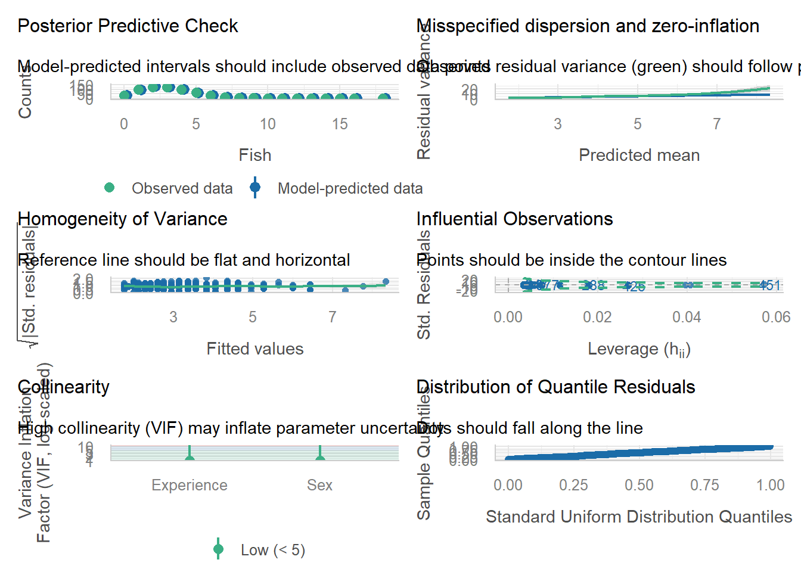
5.4.4 Models with Interaction Terms
5.4.4.1 Less Correct: the General Linear Model
Now, let’s consider a less appropriate linear model with an interaction term. Again, we’ll use our old friend lm() this time to assess the relationship between the outcome variable Fish with the predictor variables Sex and Experience as a multiple regression example with an interaction term. Again, we know it is less appropriate because we are treating the outcome variable as a continuous variable rather than a count variable. For more information on general linear modeling, we covered these topics in our Regression Recap chapter.
| Parameter | Coefficient | SE | 95% CI | t(596) | p |
|---|---|---|---|---|---|
| (Intercept) | 1.26 | 0.22 | (0.83, 1.70) | 5.74 | < .001 |
| Sex (Male) | 0.19 | 0.32 | (-0.44, 0.82) | 0.60 | 0.551 |
| Experience | 0.45 | 0.05 | (0.35, 0.55) | 9.11 | < .001 |
| Sex (Male) × Experience | -4.58e-03 | 0.07 | (-0.14, 0.13) | -0.06 | 0.949 |
As the results show, we have a significant partial effect of Experience, such that a 1 unit (or 1 year) increase in Experience increases the amount of fishes by a small amount (0.24 units of the number of “fish”) while controlling for Sex. Our model here also includes an interaction term which was not significant.
5.4.4.1.1 Checking Assumptions
Again, when we fit a model, we always want to see if there were any violations in the assumptions. We will use the diagnostic function check_model() to see if there are any deviations from lm() assumptions. For this model, the most concerning assumption appears to be the normality of residuals, as the distribution is offset from the normal curve. Updating our model to a generalized linear model that takes into account our discrete outcome variable should help fix this problem.
check_model(fitlm2)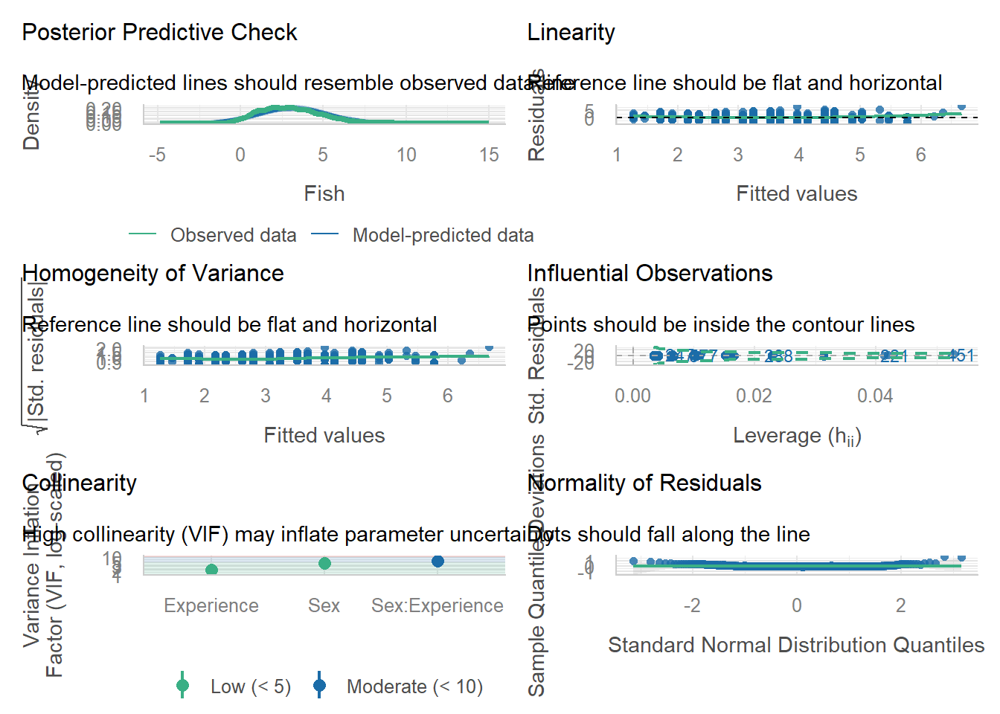
5.4.4.2 More Correct: Poisson Regression
Now let’s compare a Poisson regression model of the same variables and also including the interaction term. Like always with the Poisson model, our first step is to fit the Poisson and check if it is overdispersed or not. We will only proceed with the Poisson regression model if we find it not overdispersed.
“Is there a relationship between sex, years of experience, and the amount of fishes caught, and does the effect of one predictor depend on the other?”
Again, because we have multiple predictors, multiple regression allows us to control for the effects of multiple predictors on the outcome, and we are left with the unique effect of a predictor when controlling for other predictors. In this case, the outcome variable will be the count of fish, and the predictor variables will be Sex (a categorical variable) and Experience (a continuous variable), and the interaction term will assses the degree to which the predictor variables do or do not depend on each other.
For Poisson regression, we supply the poisson distribution and the log link function to the glm() function.
5.4.4.2.1 Parameter Table Interpretation: Log-Mean
Let’s use the model_parameters function and interpret the estimates of our model with an interaction term.
model_parameters(fit_poisson_2) |> print_md()| Parameter | Log-Mean | SE | 95% CI | z | p |
|---|---|---|---|---|---|
| (Intercept) | 0.55 | 0.07 | (0.41, 0.69) | 7.57 | < .001 |
| Sex (Male) | 0.08 | 0.10 | (-0.13, 0.28) | 0.72 | 0.470 |
| Experience | 0.13 | 0.01 | (0.10, 0.16) | 9.38 | < .001 |
| Sex (Male) × Experience | -3.41e-03 | 0.02 | (-0.04, 0.04) | -0.17 | 0.868 |
Due to the nature of the dummy coded categorical variable Sex, we will assess the parameters from each level of that variable first.
The intercept is the log mean of
fishesfor female fishers while accounting for the effect ofExperience. In this case, the simple effect of female fishers at 0 years of fishing experience have an average log mean of 0.55 fishes. This intercept value is significantly different from 0, p<0.001. This will make more sense once we exponentiate this value. The exp(0.55) = 1.73. Therefore, the baseline number of fishes of female female fishers with 0 years of experience is 1.73 fishes.
The log mean of
fishesfor male fishers while controlling for the effect ofExperienceis 0.07, or 0.07 more, than male fishers at 0 years of experience. This simple effect slope, which is the difference between males and female fishers, is also not significantly different from a log mean of 0. Once again, this value makes more sense when we exponentiate it. The exp(0.09) = 1.09, which is the multiplicative effect of male fishers compared to female fishers at 0 years of experience; in other words, male participants with 0 years of fishing experience catch 1.09 times the expected number of fishes compared to female fishers with 0 years of fishing experience. Note that the value is 1.07 is greater than 1, so male fishers are expected to catch more fishes than females fishers.
As you increase the amount of
Experienceby 1 unit (or 1 year), there is an increase in the log mean of female participants by 0.09. This slope of age is significantly different from 0, p<0.001. If we exponentiate this, we get exp(0.09) = 1.09, and is therefore 9% increase (because it is a multiplicative effect). We can interpret this as for every 1 year increase in experience for female fishers, there is a 9% increase in the number of fishes caught. (Note that this is the slope is only for female fishers as the male fishers are have a different slope due to the nature of a model with an interaction term)
The Sex-by-Experience interaction effect is the difference in the slope between male and female fishers as well as the expected change in the difference between male and female fishers the number of fishes caught for each +1 year change in experience; it is not significantly different from zero.
Note that we used the exp() a lot in order to make our log-mean estimates make more sense. We actually could have immediately printed the parameter table of model_parameters() with the argument “exponentiate = TRUE”:
model_parameters(fit_poisson_2, exponentiate = TRUE) |> print_md()| Parameter | IRR | SE | 95% CI | z | p |
|---|---|---|---|---|---|
| (Intercept) | 1.73 | 0.13 | (1.50, 1.99) | 7.57 | < .001 |
| Sex (Male) | 1.08 | 0.11 | (0.88, 1.32) | 0.72 | 0.470 |
| Experience | 1.14 | 0.02 | (1.11, 1.17) | 9.38 | < .001 |
| Sex (Male) × Experience | 1.00 | 0.02 | (0.96, 1.04) | -0.17 | 0.868 |
Remember, the value log-mean values are exponentiated, they are called “Incident Rate Ratios” or IRR. As aforementioned, they are the multiplicative effects on the baseline value (in this case, the baseline group is female fishers at 0 years of experience). For interpretation purposes, we can consider the following guidelines:
- IRR > 1, the comparison group has a higher outcome value than the baseline.
- IRR < 1, the comparison group has a lower outcome value than the baseline.
- IRR = 1, there is little to no difference between comparison and baseline.
Here, IRR for the interaction effect = 1, so there essentially no difference in the slopes for the individual predictors when we allow them to interact.
5.4.4.2.2 Checking Assumptions
When we used Poisson regression, we can see that the normality of the residuals, which was more violated in the regular multiple regression model, is more in line with the assumption.
check_model(fit_poisson_2)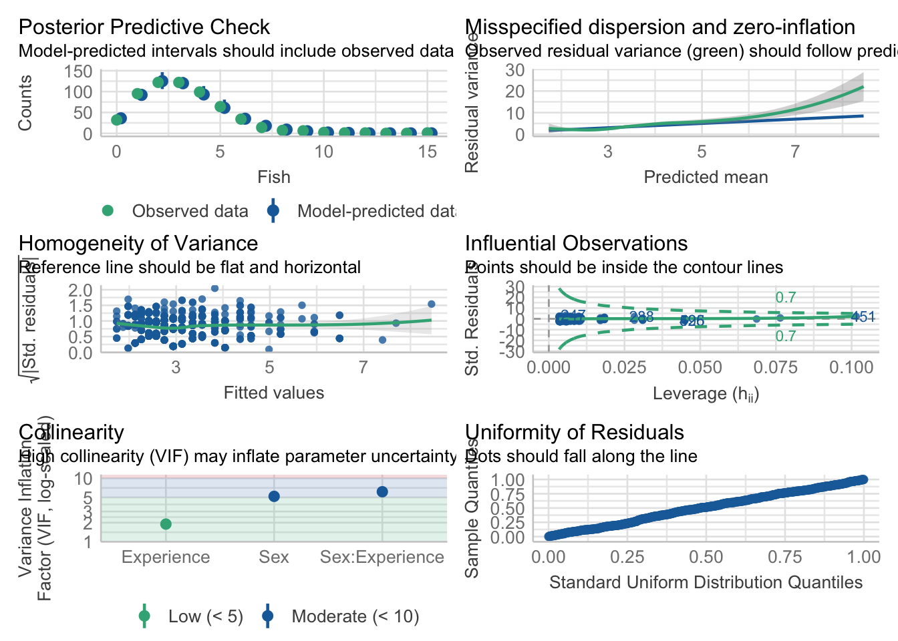
5.5 Data Demonstration 2: Negative Binomial Regression
We will use the affairs.csv dataset and count regression to predict each participant’s number of affairs from their gender, age, satisfaction, and religiousness. Since each participant’s number of affairs is independent of each other, and there is a bound of 0 and no maximum amount, then affairs example of an unbounded count variable.
- Data: depression.csv
5.5.1 Loading the Packages and Reading in Data
# A tibble: 601 × 8
affairs gender age yearsmarried children religiousness education
<dbl> <chr> <dbl> <dbl> <chr> <dbl> <dbl>
1 0 male 37 10 no 3 18
2 0 female 27 4 no 4 14
3 0 female 32 15 yes 1 12
4 0 male 57 15 yes 5 18
5 0 male 22 0.75 no 2 17
6 0 female 32 1.5 no 2 17
7 0 female 22 0.75 no 2 12
8 0 male 57 15 yes 2 14
9 0 female 32 15 yes 4 16
10 0 male 22 1.5 no 4 14
# ℹ 591 more rows
# ℹ 1 more variable: satisfaction <dbl>This data shows records for 601 individuals where each row is one participant.
Here’s a table of our variables in this dataset:
| Variable | Description | Values | Measurement |
|---|---|---|---|
affairs |
Number of affairs | Integer | Nominal |
gender |
Male or Female | String | Nominal |
age |
Age | Double | Scale |
yearsmarried |
Number of Years Married | Double | Scale |
children |
Yes or No | String | Ordinal |
religiousness |
1 (Low) to 5 (Highs) | Integer | Scale |
education |
Number of Years of Education | Integer | |
satisfaction |
1 (Low) to 5 (Highs) | Integer | Scale |
5.5.2 Prepare Data / Exploratory Data Analysis
For unbounded count regression, let’s first treat the discrete variables in this dataset as factors.
Next, let’s plot the distribution of the count of affairs. The main thing to consider is that this is a discrete variable and using Poisson regression inherently takes this into account.
Now, let’s try to see the relationship between the number of affairs and relgiousness:
HARD TO SEE ANY RELATIONSHIPS?
ggplot(data = affairs, mapping = aes(x = affairs, y = religiousness)) +
geom_point() 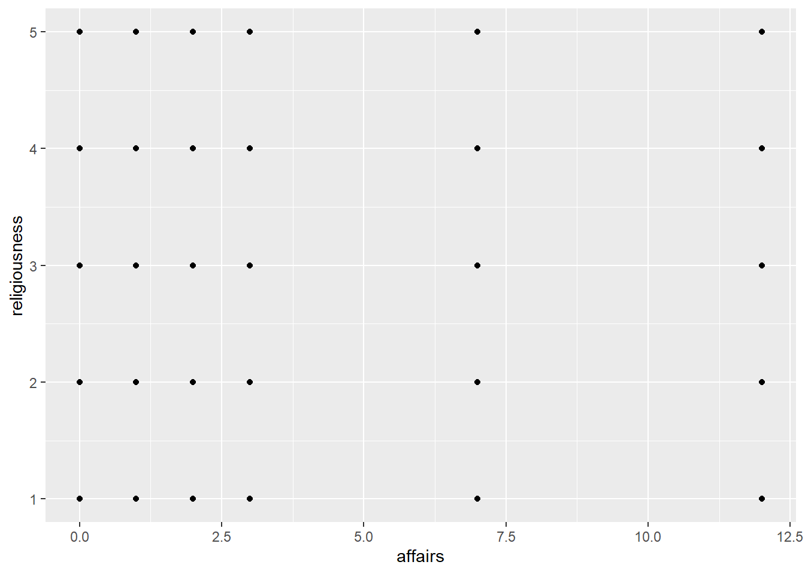
5.5.3 Checking for Overdispersion
As aforementioned, the key to choosing between a Poisson or Negative Binomial regression is checking for overdispersion in the count variable. Specifically, if the mean or variance of the count variable is roughly the same, then using a Poisson regression is reasonable, but if the variance is significantly greater than the mean, then it would be better to default to a Negative Binomial regression.
Therefore, we will fit the Poisson model first and test for overdispersion before choosing the Negative Binomial model.
5.5.4 Models Without Interaction Terms
5.5.4.1 Less Correct: The General Linear Model
Before we fit the Poisson or Negative Binomial regression model, it would be worthwhile to try fitting the less appropriate regular general linear model. We’ll use our old friend lm() to assess the relationship between the outcome variable affairs with the predictor variables gender and age. For more information on general linear modeling, we covered these topics in our Regression Recap chapter.
| Parameter | Coefficient | SE | 95% CI | t(598) | p |
|---|---|---|---|---|---|
| (Intercept) | 0.36 | 0.49 | (-0.60, 1.33) | 0.74 | 0.459 |
| gender (male) | -0.04 | 0.27 | (-0.58, 0.49) | -0.16 | 0.872 |
| age | 0.03 | 0.01 | (5.35e-03, 0.06) | 2.33 | 0.020 |
As the results show, we have a significant partial effect of age, such that a 1 unit increase in age increases the amount of affairs by a small amount (0.03 units of “affair”) while controlling for gender. Despite the challenge of interpreting non-integer values of the amount of affairs, it is worth nothing that the regular lm() “worked” in that it was able to produce an estimate.
5.5.4.1.1 Checking Assumptions
When we fit a model, we always want to see if there were any violations in the assumptions. When using the general linear model via the lm() function for binary responses, taking a look at a plot of the residuals, using check_residuals() 1, should be concerning.
## Check residuals
check_residuals(fitlm3) |> plot() # looks bad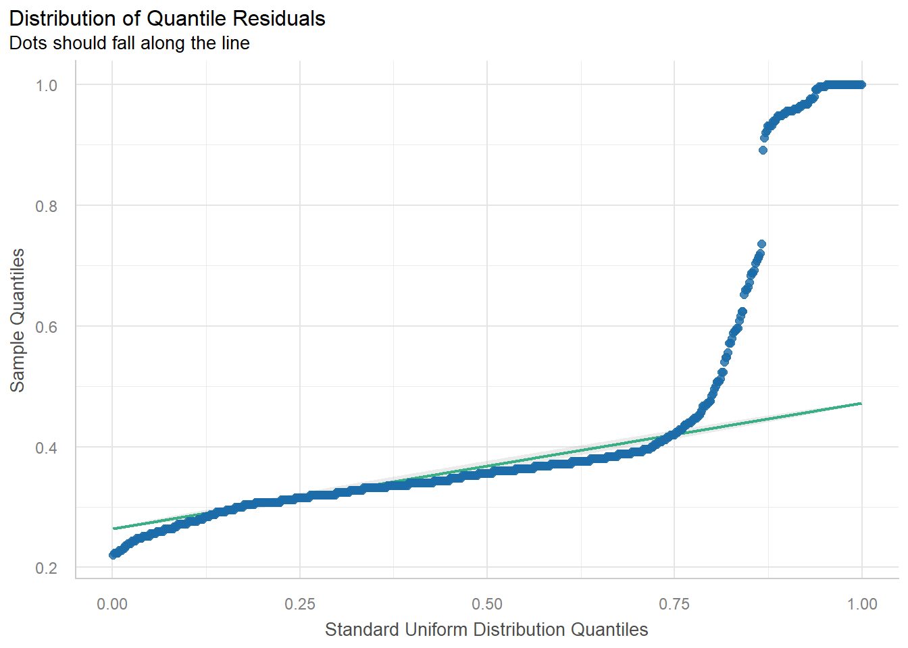
Yikes! As you can see, the dots do not fall neatly along the line, especially at the ends of the quantiles. Once this or any other assumption of the general linear model are not met, this is a clear sign that parts of the model may not be trustworthy. Specifically, in this case of the non-uniformity of residuals, there is terrible violation to the model’s uncertainty estimates. While the predictions may be okay and others could argue this violation does not appear too detrimental, we can (and should) do better.
5.5.4.2 More Correct: The Genearlized Linear Model
Now let’s compare our modeling of the same variables using Poisson regression or Negative Binomial regression.
First, we will decide which of the two models is better for this question based on an overdispersion test. Then, we will interpret the results of that model.
“Is there a relationship between the age, gender, and the amount of affairs?”
Again, because we have multiple predictors, multiple regression allows us to control for the effects of multiple predictors on the outcome, and we are left with the unique effect of a predictor when controlling for other predictors. In this case, the outcome variable will be affairs, and the predictor variables will be gender (categorical variable) and age (continuous variable).
We did a lot of work already with the lm() in the “Regression Recap”. The glm() function is in many ways the same as the lm() function. Even the syntax for how we write the equation is the same. In addition, we can use the same model_parameters() function to get our table of parameter estimates. Indeed, we will use the glm() function for the remainder of the rest of the online modules.
But notice that the glm() function has one more input argument. This input argument is the “family” input argument, which requires which “family of distributions” to use and which “link function” choice.
5.5.4.3 Choosing Between Poisson or Negative Binomial
For Poisson regression, we supply the Poisson distribution and the log link function.
Now let’s check if there is overdispersion in the Poisson model:
check_overdispersion(fit_poisson_3)# Overdispersion test
dispersion ratio = 7.366
Pearson's Chi-Squared = 4404.836
p-value = < 0.001Overdispersion detected.Since overdispersion was detected in the Poisson model, we will now use the the Negative Binomial model to account for the overdispersion. Remember, overdispersion in the Poisson model means that our model does not fit our data well.
For Negative Binomial regression, we will use a slightly differnt glm function called glm.nb() from the MASS package. Instead of supplying a family/link function argument, the function already understands we are fitting a Negative Binomial model, so the input argument for glm.nb() is more compact.
fit_nb_1<- glm.nb(
formula = affairs ~ gender + age,
data = affairs
)Therefore, for the same combination of predictor variables and count outcome variable, we will use the Negative Binomial model. This takes overdispersion into account and also takes advantage of the fact that we can interpret the estimates interchangeably between both models.
5.5.4.4 Paramter Table Interpretation: Log-Mean (Negative Binomial)
Using the Negative Binomial model, let’s interpret use the model_parameters function and interpret the estimates.
model_parameters(fit_nb_1) |> print_md()| Parameter | Log-Mean | SE | 95% CI | z | p |
|---|---|---|---|---|---|
| (Intercept) | -0.61 | 0.46 | (-1.63, 0.43) | -1.33 | 0.185 |
| gender (male) | -0.04 | 0.26 | (-0.54, 0.47) | -0.16 | 0.874 |
| age | 0.03 | 0.01 | (-6.93e-04, 0.06) | 2.19 | 0.029 |
The parameter table output from a model fit with glm.nb() looks very similar to parameter table outputs from models fit with lm(). But there is a big difference – in glm() and glm.nb() models, we are no longer working in the same raw units!
This difference is apparent in the second column of the output table: “Log-Mean”. Because we fit a Negative Binomial regression with a log function, the parameter values are in “log-mean” unit.
Due to the nature of the dummy coded categorical variable gender, we will assess the parameters from each level of that variable first.
The intercept is the log mean of
affairsfor female participants while accounting for the effect ofage. In this case, female participants who are 0 years old have an average log mean of -0.61 affairs. This intercept value is not significantly different from 0. This will make more sense once we exponentiate this value. The exp(-0.61) = 0.54. Therefore, the baseline number of affairs for female participants who are 0 years old is 0.54.
The log mean of
affairsfor male participants while controlling for the effect ofageis -0.04, or 0.04 less, than female participants. This slope is also not significantly different from a log mean of 0. Once again, this value makes more sense when we exponentiate it. The exp(-0.04) = 0.96, which is the multiplicative effect of a male participant compared to females; in other words, male participants at age 0 have a 0.96 times the expected number of affairs of females aged 0. Note that the value is 0.96 is less than 1, so males have slightly lesser affairs than females.
As you increase
ageby 1 unit, there is an increase in the log mean of both male and female participants by 0.03. This slope of age is significantly different from 0 (p<0.05). If we exponentiate this, exp(0.03) = 1.03, or 3% increase (because it is a multiplicative effect). We can interpret this as for every 1 year increase in age for male and females, there is a 3% increase in the number of affairs.
Note that we used the exp() a lot in order to make our log-mean estamates make more sense. We could have immediately printed the parameter table of model_parameters() with the argument “exponentiate = TRUE”:
model_parameters(fit_nb_1, exponentiate = TRUE) |> print_md()| Parameter | IRR | SE | 95% CI | z | p |
|---|---|---|---|---|---|
| (Intercept) | 0.54 | 0.25 | (0.20, 1.54) | -1.33 | 0.185 |
| gender (male) | 0.96 | 0.25 | (0.58, 1.59) | -0.16 | 0.874 |
| age | 1.03 | 0.01 | (1.00, 1.06) | 2.19 | 0.029 |
As in the Poisson model, the value log-mean values are exponentiated, they are called “Incident Rate Ratios” or IRR. As aforementioned, they are the multiplicative effects on the baseline value (in this case, the baseline group is female participants at age 0). For interpretation purposes, we can consider the following guidelines:
- IRR > 1, the comparison group has a higher outcome value than the baseline.
- IRR < 1, the comparison group has a lower outcome value than the baseline.
- IRR = 1, there is little to no difference between comparision and baseline.
5.5.4.5 Estimate means
Because we have a dummy-coded predictor, gender, we can estimate the mean number of affairs for females and males averaged over age with estimate_means():
| gender | Mean | 95% CI |
|---|---|---|
| female | 1.44 | (1.02, 2.03) |
| male | 1.38 | (0.96, 1.99) |
Variable predicted: affairs; Predictors modulated: gender; Predictors averaged: age (32); Predictions are on the response-scale.
Notice that if we take the ratio between males and females, we get the IRR for males: 1.38/1.44 = 0.96, or males have a 0.96 multiplicative (so, lesser) amount of affairs compared to females.
5.5.4.5.1 Checking Assumptions
check_residuals(fit_nb_1) |> plot()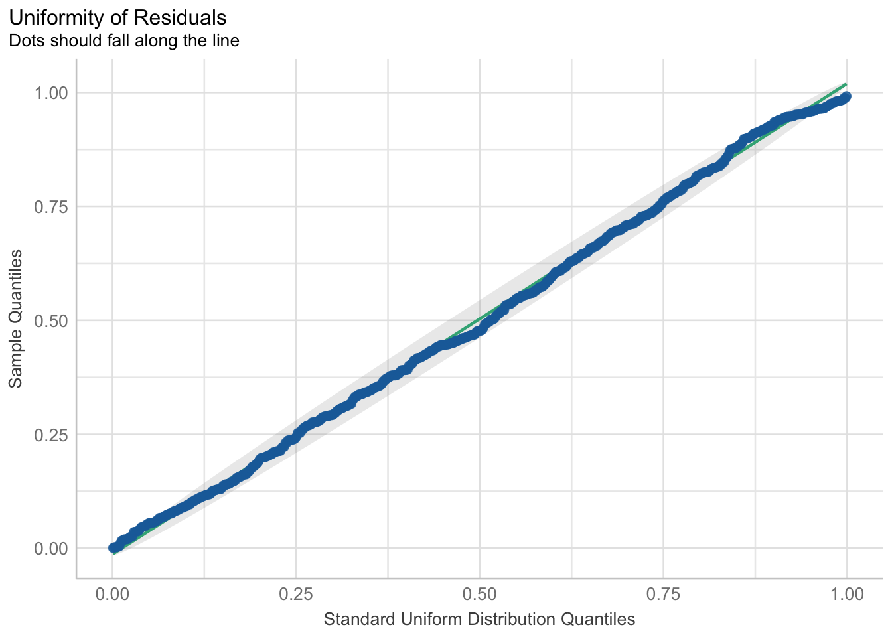
5.5.5 Models With Interaction Terms
5.5.5.1 Less Correct: The General Linear Model
Let’s again consider a regular general linear model with an interaction term. We’ll use lm() to assess the relationship between the outcome variable affairs with the predictor variables gender, satisfaction, and religousnes with a two-way interaction between gender and religiousness. Again, for more information on general linear modeling, we covered these topics in our Regression Recap chapter.
| Parameter | Coefficient | SE | 95% CI | t(596) | p |
|---|---|---|---|---|---|
| (Intercept) | 6.03 | 0.69 | (4.66, 7.39) | 8.68 | < .001 |
| gender (male) | -0.20 | 0.73 | (-1.64, 1.24) | -0.27 | 0.783 |
| satisfaction | -0.83 | 0.12 | (-1.06, -0.60) | -7.10 | < .001 |
| religiousness | -0.43 | 0.16 | (-0.74, -0.13) | -2.77 | 0.006 |
| gender (male) × religiousness | 0.09 | 0.22 | (-0.34, 0.52) | 0.40 | 0.692 |
As the results show, we have a significant partial effect of satisfaction such that a 1 unit increase in satisfaction decreases the amount of affairs by 0.83 units while controlling for gender and religiousness, and a significant partial effect of religiousness such that a 1 unit increase in religiousness decreases the amount of affairs by 0.43 units while controlling for gender and satisfaction. Our model here also includes an interaction term which was not significant.
5.5.5.1.1 Checking Assumptions
As seen using the check_model function, the most concerning violations of assumptions appears to be the homogeneity of variance and the normality of residuals. Updating our model to a generalized linear model that takes into account our discrete outcome variable should help fix these problems.
check_model(fitlm4)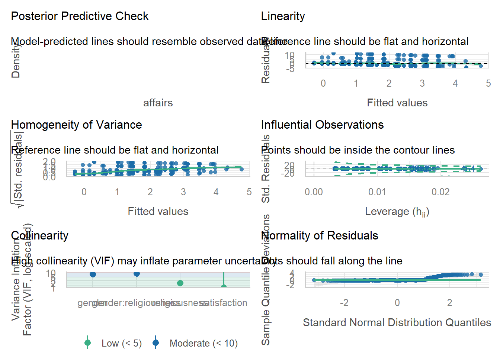
5.5.5.2 More Correct: the Generalized Linear Model
Now let’s compare our modeling of the same variables with our interaction term using Poisson regression or Negative Binomial regression.
First, we will decide which of the two models is better for this question based on an overdispersion test. Then, we will interpret the results of that model.
“Is there a relationship between satisfaction, gender, and religiousness, with an interaction between gender and religiousness, on the amount of affairs?”
First, let’s start by fitting the Poisson model and testing it for overdispersion.
5.5.5.3 Choosing Between Poisson or Negative Binomial
For Poisson regression, we supply the Poisson distribution and the log link function to the glm() function.
Now let’s check if there is overdispersion in the Poisson model:
check_overdispersion(fit_poisson_4)# Overdispersion test
dispersion ratio = 6.715
Pearson's Chi-Squared = 4002.265
p-value = < 0.001Overdispersion detected.Since overdispersion was detected in the Poisson model, we will now use the the Negative Binomial model to account for the overdispersion. Remember, overdispersion in the Poisson model means that our model does not fit our data well.
For Negative Binomial regression, again we will use a slightly differnt glm function called glm.nb() from the MASS package. Instead of supplying a family/link function argument, the function already understands we are fitting a Negative Binomial model, so the input argument for glm.nb() is more compact.
| Parameter | Log-Mean | SE | 95% CI | z | p |
|---|---|---|---|---|---|
| (Intercept) | 3.70 | 0.64 | (2.37, 5.12) | 5.77 | < .001 |
| gender (male) | -0.65 | 0.67 | (-1.99, 0.71) | -0.96 | 0.335 |
| satisfaction | -0.55 | 0.11 | (-0.77, -0.34) | -5.18 | < .001 |
| religiousness | -0.48 | 0.15 | (-0.76, -0.19) | -3.21 | 0.001 |
| gender (male) × religiousness | 0.26 | 0.21 | (-0.16, 0.67) | 1.25 | 0.210 |
Therefore, for the same combination of predictor variables and count outcome variable, we will use the Negative Binomial model. This takes overdispersion into account and also takes advantage of the fact that we can interpret the estimates interchangeably between both models.
5.5.5.4 Paramter Table Interpretation: Log-Mean (Negative Binomial)
Using the Negative Binomial model, let’s interpret use the model_parameters function and interpret the estimates.
model_parameters(fit_nb_2)Parameter | Log-Mean | SE | 95% CI | z | p
---------------------------------------------------------------------------------
(Intercept) | 3.70 | 0.64 | [ 2.37, 5.12] | 5.77 | < .001
gender [male] | -0.65 | 0.67 | [-1.99, 0.71] | -0.96 | 0.335
satisfaction | -0.55 | 0.11 | [-0.77, -0.34] | -5.18 | < .001
religiousness | -0.48 | 0.15 | [-0.76, -0.19] | -3.21 | 0.001
gender [male] × religiousness | 0.26 | 0.21 | [-0.16, 0.67] | 1.25 | 0.210
Uncertainty intervals (profile-likelihood) and p-values (two-tailed)
computed using a Wald z-distribution approximation.
The model has a log- or logit-link. Consider using `exponentiate =
TRUE` to interpret coefficients as ratios.Due to the nature of the dummy coded categorical variable gender, we will assess the parameters from each level of that variable first.
The intercept is the log mean of
affairsfor female participants while accounting for the effect ofsatisfactionandreligiousness. In this case, female participants with scores of 1 on bothsatisfactionandreligiousnesshave an average log mean of 3.70-0.55-0.48 = 2.67 affairs. This intercept value is significantly different from 0, p<0.001. This will make more sense once we exponentiate this value. The exp(2.67) = 14.44. (Sincesatisfactionandreligiousnessare scaled from 1-5, we must include those slopes when predicting our outcome response for our intercept). Therefore, the baseline number of affairs for female participants who are most unsatisfied and not religious are expected to have 14.44 affairs.
The log mean of
affairsfor male participants while controlling for the effect ofsatisfactionandreligiousnessis -0.65, or 0.65 less, than female participants. This slope difference between males and females is also not significantly different from a log mean of 0. Once again, this value makes more sense when we exponentiate it. The exp(-0.65) = 0.52, which is the multiplicative effect of a male participant compared to females; in other words, male participants with scores of 1 on bothsatisfactionandreligiousnesshave a 0.52 times the expected number of affairs of females with the same scores. Note that the value is 0.52 is less than 1, so males have half than affairs than females.
As you increase
satisfactionby 1 unit, there is a decrease in the log mean of female participants by 0.55 while holdingreligiousnessconstant. This slope ofsatisfactionfor females (at a score for 1 forreligiousness) is significantly different from 0 (p<0.001). If we exponentiate this, exp(-0.55) = 0.58, or 58% decrease in affairs (because it is a multiplicative effect). We can interpret this as for every 1 unit increase insatisfactionfor females, there is a 58% decrease in the number of affairs.
As you increase
religiousnessby 1 unit, there is a decrease in the log mean of female participants by 0.48 while holdingsatisfactionconstant. This slope ofreligiousnessfor females (at a score for 1 forsatisfaction) is significantly different from 0 (p=0.001). If we exponentiate this, exp(-0.48) = 0.62, or 62% decrease in affairs (because it is a multiplicative effect). We can interpret this as for every 1 unit increase inreligiousnessfor females, there is a 62% decrease in the number of affairs.
The
gender[male] x religiousnessinteraction effect is not significant. The slopes for gender and religiousness do not depend on each other.
Note that once more we used the exp() a lot in order to make our log-mean estamates make more sense. We could have immediately printed the parameter table of model_parameters() with the argument “exponentiate = TRUE”:
model_parameters(fit_nb_2, exponentiate = TRUE) |> print_md()| Parameter | IRR | SE | 95% CI | z | p |
|---|---|---|---|---|---|
| (Intercept) | 40.25 | 25.76 | (10.72, 166.61) | 5.77 | < .001 |
| gender (male) | 0.52 | 0.35 | (0.14, 2.02) | -0.96 | 0.335 |
| satisfaction | 0.58 | 0.06 | (0.46, 0.71) | -5.18 | < .001 |
| religiousness | 0.62 | 0.09 | (0.47, 0.82) | -3.21 | 0.001 |
| gender (male) × religiousness | 1.29 | 0.27 | (0.86, 1.96) | 1.25 | 0.210 |
Now, as IRR values, we can simply multiply the terms for our parameter relationships and model predictions.
5.5.5.4.1 Checking Assumptions
We benefit from using the Negative Binomial model over the general model and the Poisson model by accounting for both model assumptions (including overdispersion):
check_model(fit_nb_2)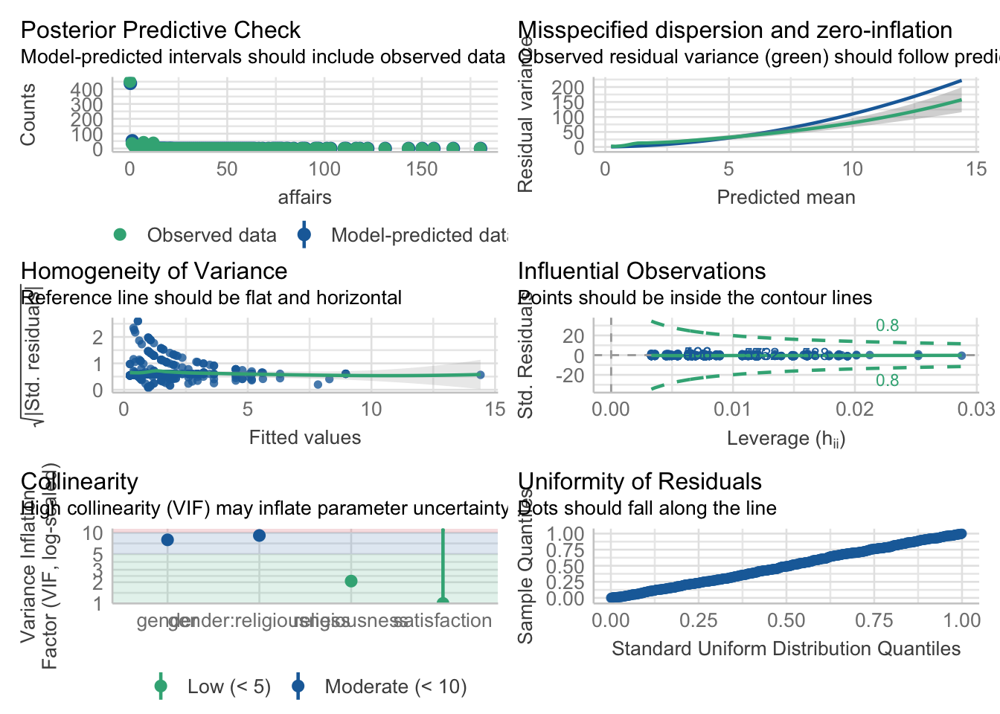
Both the homogeneity of variance and uniformity of residuals have marked improvments compared to the violations found in the regular linear model.
check_residuals()requires the packageqqplotrto be installed.↩︎